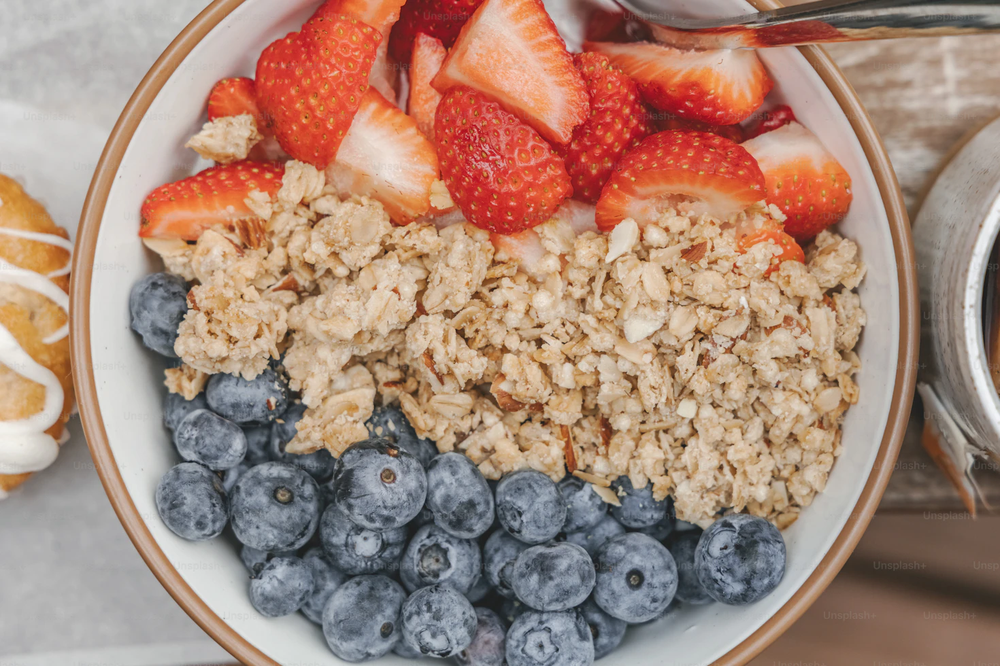

Oatmeal

A nutritious bowl of cinnamon flavored oatmeal.
Based on the "How Not To Die" book, this recipe is loaded with
healthy ingredients like oats, flaxseed, berries, and hemp seeds.
This is a great recipe to feed your gut-biome.
Ingredients
- 1 cup Oats
- 1 cup milk
- 1/4 tsp Cinnamon
- 2 tbsp Flaxseed
- 2 tbsp Hemp Seeds
- 1/4 cup Blueberries
- 1 whole, sliced Banana
Steps
- Combine the oats, milk, cinnamon, flaxseed, hemp seeds, and blueberries in a bowl.
- Microwave the oatmeal for 1 minute.
- Top with sliced banana.